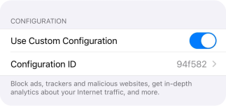
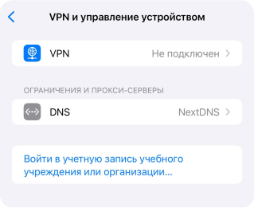
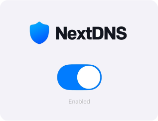

Установка на iOS
Для игры подойдет оригинальное приложение Мобильной Аватарии, которое можно скачать в AppStore.
Шаг 1:
Скачайте приложение NextDNS в AppStore
Шаг 2:
Откройте приложение NextDNS, нажмите на черную иконку с 3 точками, включите опцию "Use custom configuration", в поле Configuration ID введите: 94f582
Шаг 3:
Вернитесь назад, попробуйте включить NextDNS. Приложение предложит открыть настройки iPhone - откройте их
Шаг 4:
Во вкладке Ограниичения и прокси-серверы / DNS, выберите "NextDNS" вместо "Автоматически", чтобы настройки выглядели так, как на скриншоте ниже. Если таких настроек нет, попробуйте перезагрузить iPhone
Шаг 5:
Вернитесь назад, включите NextDNS:
